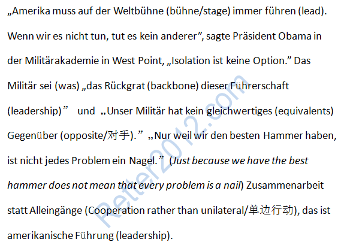

返回主页
美国领导世界

2014：奥巴马西点演讲
我的底线是：
美国必须一如既往在世界舞台上发挥领导作用。我们如果不领导世界，谁来领导？你们的军队是这种领导作用的中流砥柱，现在如此，一贯如此，今后也将如此。但是，美国的军事行动不能成为我们在每个场合发挥领导作用的唯一因素――甚至不是最基本的因素。不能因为我们有最优质（the best hammer）的榔头，就把每个问题都当成钉子。
战舰美利坚号
德语名言：激励奋斗（5）
美国还想再领导世界100年？可惜没有长生不老的药，也没有千秋万代的方。没有任何人、党或国家可以永远统治下去。新陈代谢乃自然规律！
足球世界杯(FIFA World Cup)
America must always lead on the world stage. If we don’t, no one else will. The military that you have joined is, and always will be, the backbone of that leadership. But U.S. military action cannot be the only �C or even primary �C component of our leadership in every instance. Just because we have the best hammer does not mean that every problem is a nail. And because the costs associated with military action are so high, you should expect every civilian leader �C and especially your Commander-in-Chief �C to be clear about how that awesome power should be used.
亚洲是亚洲人的亚洲
爱（Was du liebst, lass frei）
Piratenpartei
德语名言：激励奋斗（6）
挑战原文：但泽（Danzig）
version:1.0; jobnet@188.com © retter2012.com